First Day of Class
EES 4891/5891
Probability & Statistics for Geosciences
Jonathan Gilligan
Class #1: Tuesday, January 07 2025
Introductions
Introduce Yourselves
- Name
- What are your Major or Program, and research interests?
- What’s your year or how long you’ve been in your graduate program?
- What previous math or stats have you taken?
- What do you hope to get from this class?
- Something interesting about yourself
- (Optional) Ask me a question about some aspect of probability or statistics
What Are Probability & Statistics?
What Is Statistics?
- Define “statistics”
- What do you use statistics for?
- What kinds of questions do you expect statistics to answer?
- Any questions for me?
What Is Proability?
- What is the probability the sun will rise tomorrow?
- What is the probability that if I roll a fair die, it will come up 5
- How would you know whether an answer to one of these questions is correct?
Applications
Climate Change
- What do scientists mean when they say the earth is getting hotter?
- How do we define the temperature of the earth?
- How do we measure the temperature of the earth?
- How do paleoclimatologists figure out what the earth’s temperature used to 1000 years ago?
Research Design
- You are studying a species of snail that lives on two islands, about 100 miles apart.
- On each island, there is considerable variation in the size of the snails’ shells
- You want to determine whether snails on island A are larger than snails on island B, and by how much.
- How would you do this?
- How many snails would you need to collect and measure from each island?
A Statistical Conundrum
Marsha Blackburn
Did temperatures stop rising 18 years ago?
Look at 1970–2014
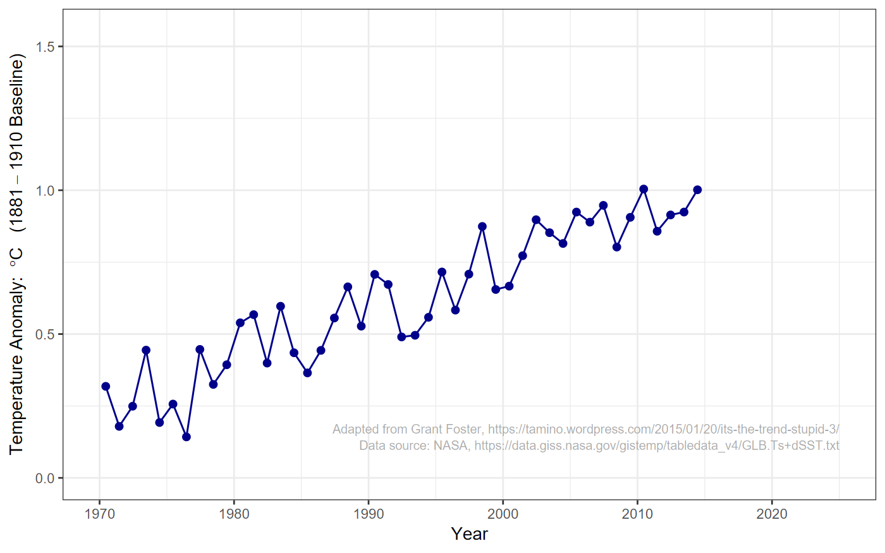
Did temperatures stop rising?
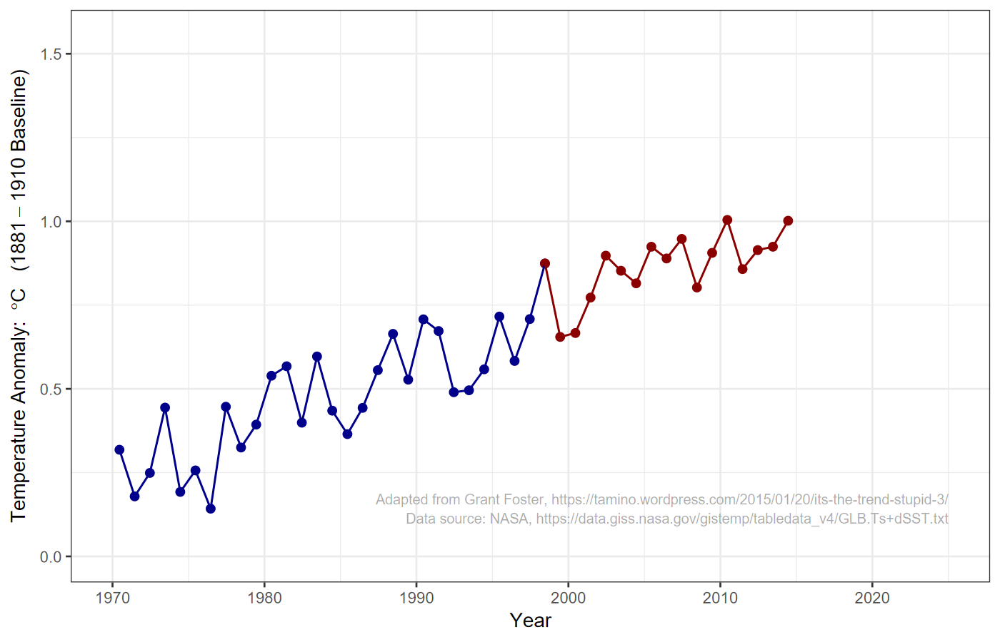
Did temperatures stop rising?
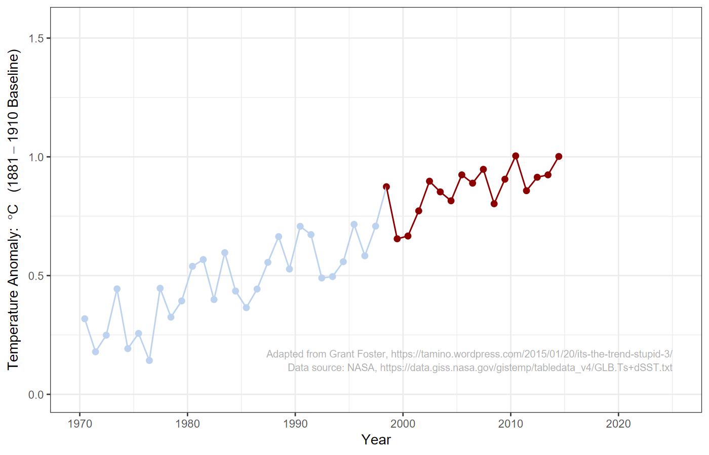
Scientists worried
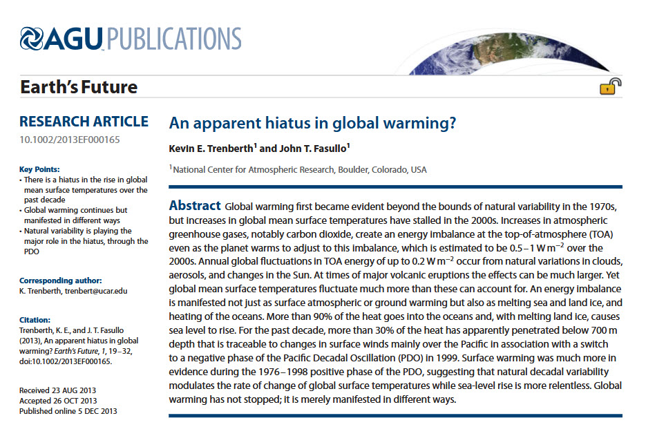
Trenberth, K.E., & Fasullo, J.T. (2013). An apparent hiatus in global warming? Earth’s Future, 1, 19. doi: 10.1002/2013EF000165
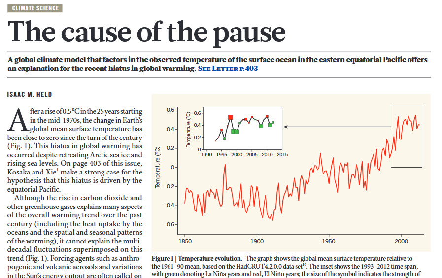
Held, I.M. (2013). The cause of the pause. Nature, 501, 318. doi: doi.org/10.1038/501318a
Did temperatures really stop rising?
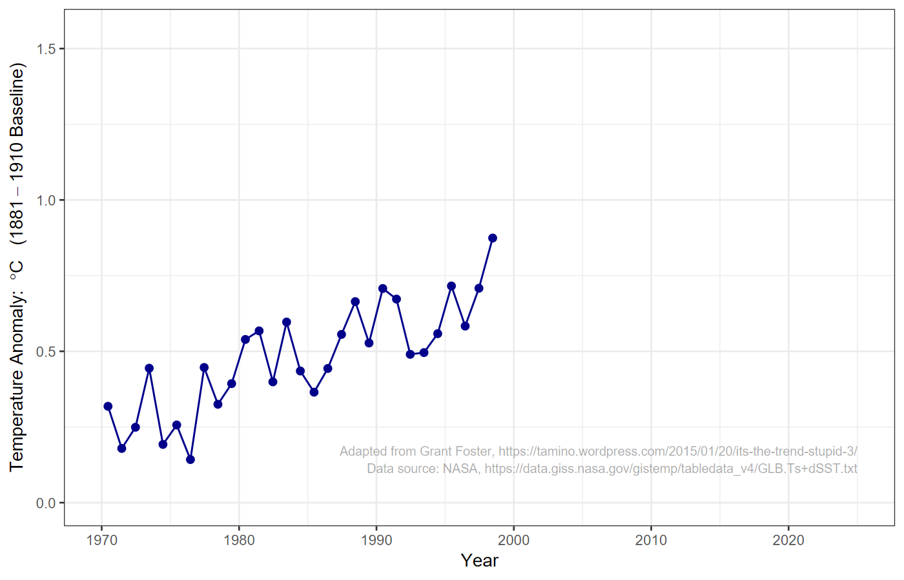
Did temperatures really stop rising?
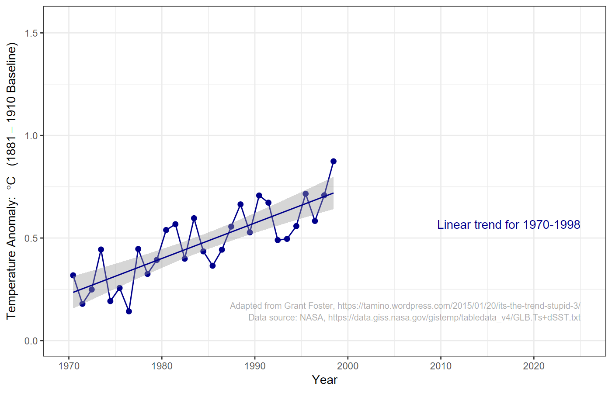
Did temperatures really stop rising?
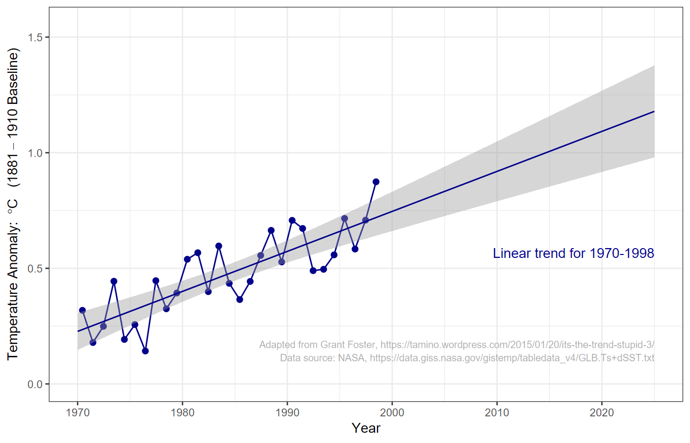
Did temperatures really stop rising?
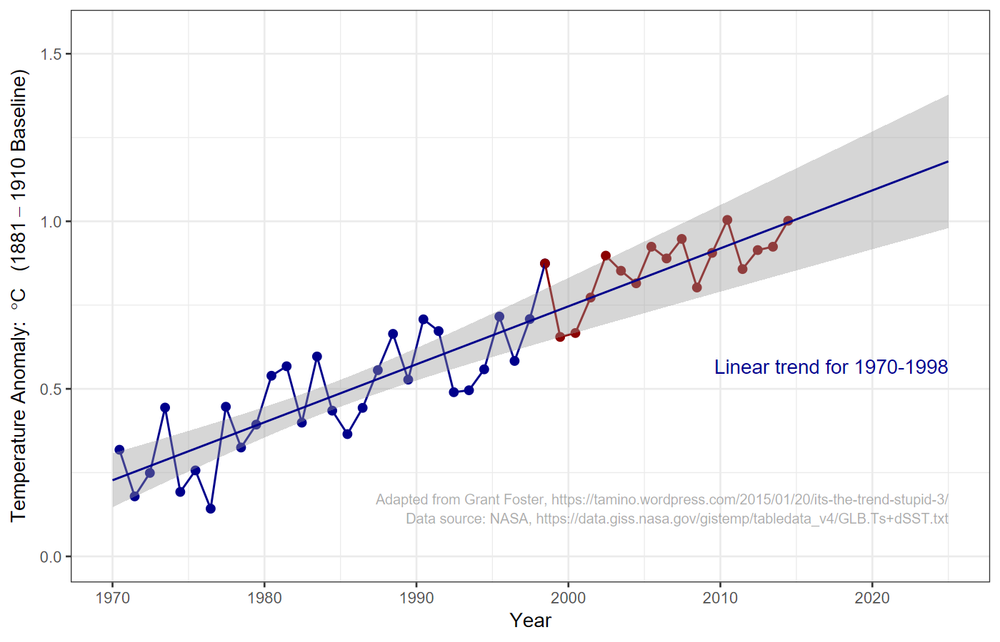
Did temperatures really stop rising?
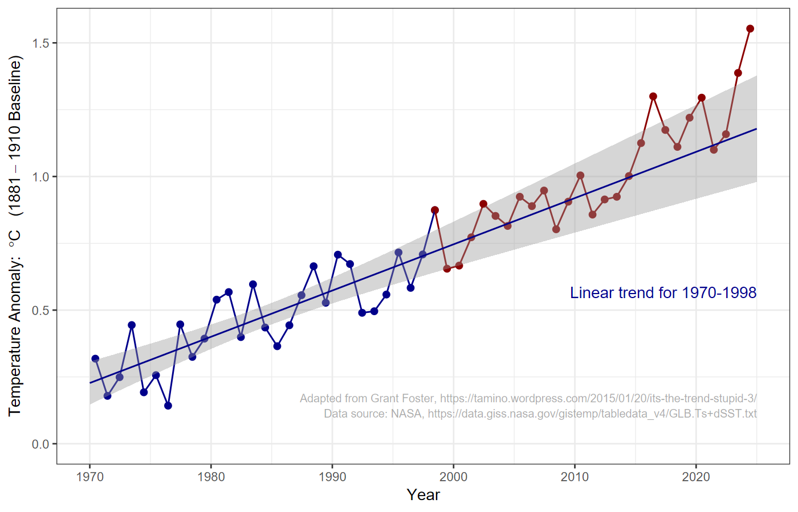
Lessons
- Many leading scientists underestimated how many years of data they needed to tell whether an apparent slowdown in a treand was real, or just a temporary statistical fluke.
Organization of the Course
Organization of the Course
- The main course website is https://ees5891.jgilligan.org
- Information:
- Syllabus
- Reading assignments
- Homework assignments
- Slides from class
- Instructions for installing coourse software on your computer
- Links to helpful resources
- Slides:
- Title slide has a QR code with link to online version
- I also post PDF versions
- Slides have two-dimensional navigation
- Press “?” in your browser for help
- Information:
Textbooks
Textbooks
| 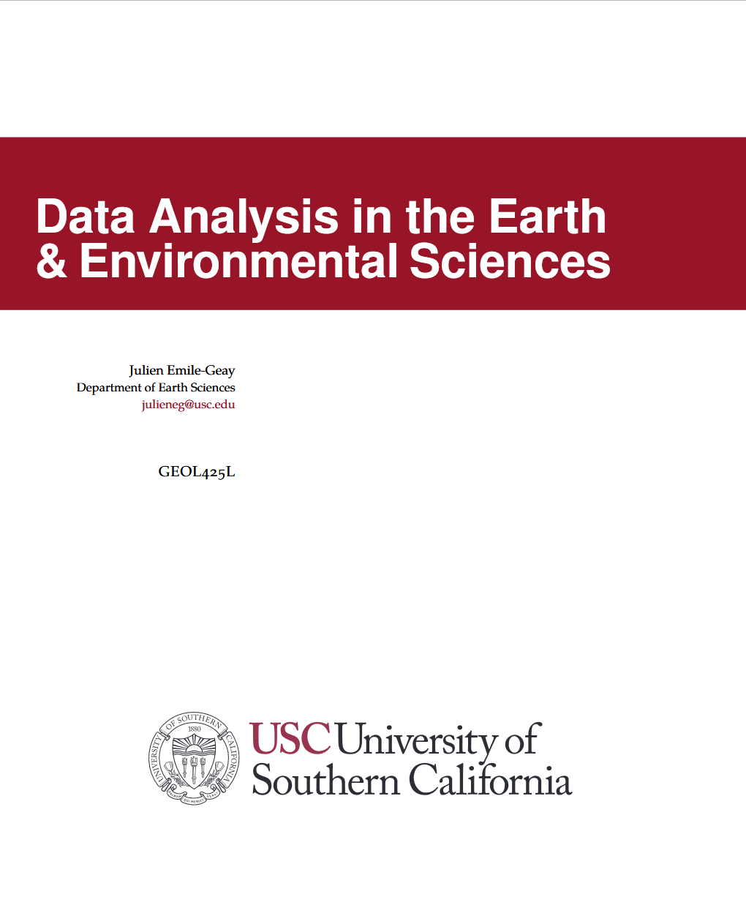 |
Julien Emile-Geay, Data Analysis for Earth & Environmental
Science, 5th edition (USC, 2023) Required (Free to download PDF) |

|
Hadley Wickham, Mina Çetinkaya-Rundel & Garrett Grolemund, R
for Data Science, 2nd edition (O’Reilly, 2023) Required (Free web version online) |
Computational Resources
R
- We will use the R for all the statistical analysis in this course
- It is free and open source
- It is widely used and powerful
- It is written specifically for statistical analysis
- There is an extensive library of free packages people have written to extend it.
- You can find instructions for installing R and the other software for this course in the “Tools” page of the class web site and in the homework assignment for next Tuesday.
RStudio
- We will use the RStudio integrated development environment for
working with R.
- RStudio combines an editor for writing code and an environment for running R scripts and also using R interactively, displaying graphics, etc.
- Like R, RStudio is free and open-source.
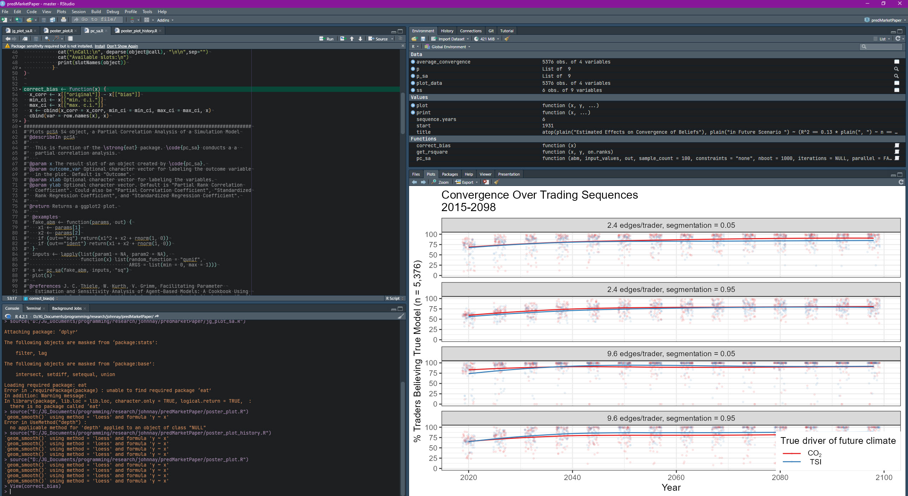
Reproducible Research
Spreadsheets for Data Analysis
- Statistical analysis with spreadsheets
-
What happens if someone raises questions several years after you publish your research?
- Can you go back to your spreadsheet and understand everything you did in the analysis?
- If you give the spreadsheet to someone else, can they understand your analysis by reading it?
If you make an error in a formula in one of the cells of a large spreadsheet, how hard would it be to find and correct the error?
-
You have just finished a long analysis and find that some of the data was entereed incorrectly.
How much work would it take to correct the error and update your report?
-
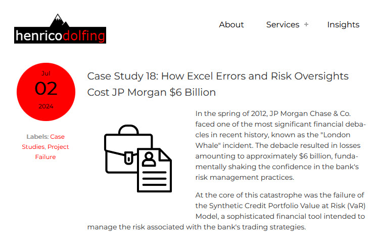
Henrico Dolfing Case Studies, https://www.henricodolfing.com/2024/07/case-study-jp-morgan-chase-london-whale.html
Scientific Research with Spreadsheets
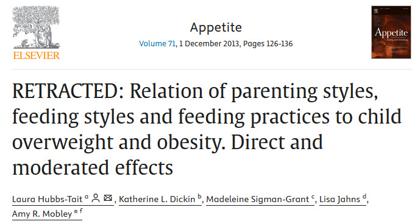
L. Hubbs-Tait et al. (2013) Appetite, 71, 126. doi: 10.1016/j.appet.2013.08.004
I had found an error in the data for the manuscript and had tracked down the source of the error to a column switching mistake in copying data from one spreadsheet to another…. The error was difficult to detect because the coefficients for internal consistency of all measures were acceptable as were the descriptive statistics for all measures.
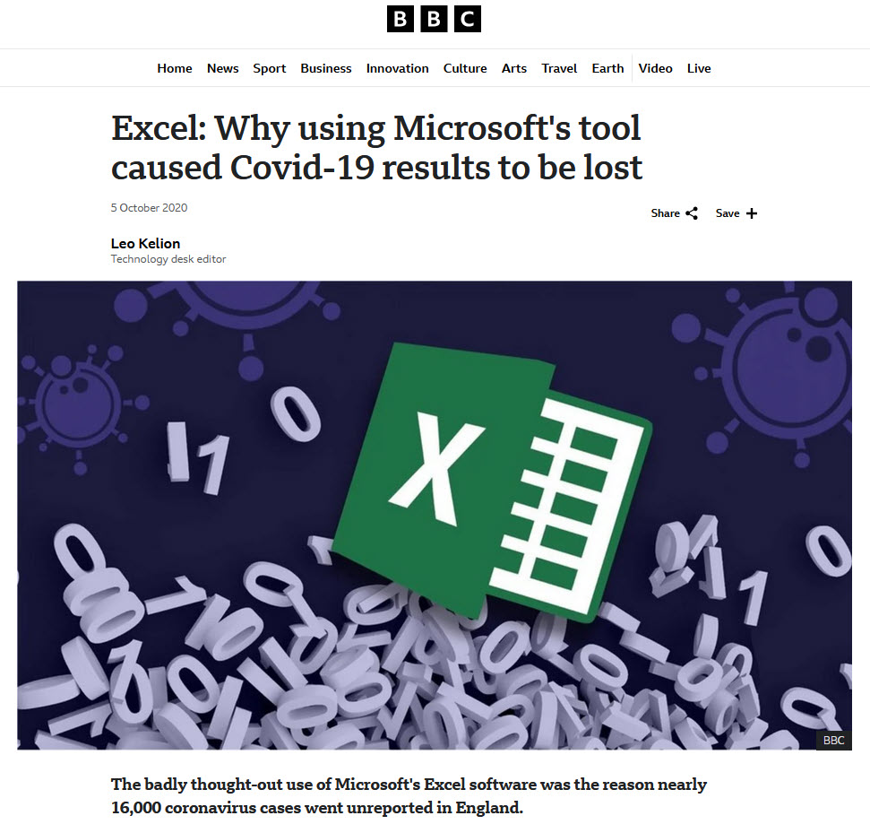
Reproducible Research
- All analysis is performed with computer scripts.
- Plain text makes it easy to read, understand, and check for errors.
- Revision control tracks all edits
- Old versions can be recovered
- Automate generating figures & tables, inserting numbers into
text.
- If data changes, or errors are corrected in analysis scripts, press a button to automatically regenerate the report or manuscript.
Tools:
-
gitfor managing files, tracking edits and revisions.-
GitHubservice stores project in the cloud. Everything can be recovered if your computer dies.
-
-
QuartoorRMarkdownto automatically generate manuscripts, reports, websites, blog posts, and presentation slides from your data analysis.